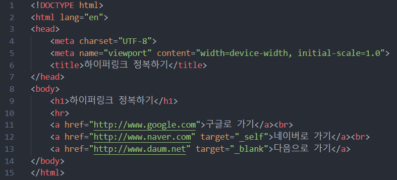

[HTML]
하이퍼링크 태그
1. 하이퍼링크(hyper-link)
다른 문서로 점프할 수 있는 연결고리
텍스트나 이미지에 다른 웹 페이지의 주소
<a> 태그
1) href 속성 : Hypertext Reference
ex. <a href="http://www.google.com">구글로 가기</a>, <a href="룰루랄라.html">룰루랄라보기</a>
2) target 속성 : 링크가 걸리는 위치 지정
target="_blank" : 새 창에서 열기
target="_self" : 현재 창에서 열기 (디폴트값)
3) id 속성 : 한 페이지 내에서 element 를 식별하기 위해 사용, 이름 중복 X
현재 페이지 내의 해당 위치로 이동 가능
2. 예제 ;
- 구현 할 것
1. a 태그의 href 속성으로 주소 넣어주기
2. target 속성으로 새 창에서 열릴지 현재 창에서 열릴지 선택
(Q. 아무것도 하지 않으면? | A. 현재 창에서 열린다)
- 예시 코드

메뉴로 돌아가기